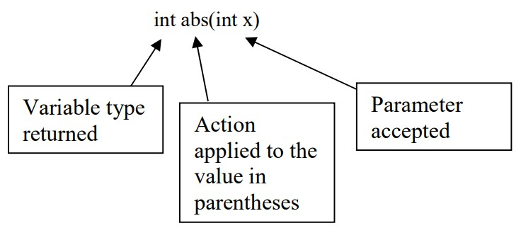

The math class is a powerful class of methods for performing mathematical computations. An example of how the math class can be applied is illustrated below. The example below computes the square root of 17. The result is assigned to the double variable p because square roots typically do not result in integer values.
double p = Math.square(17);
In the above example,
- double p is the variable to which the result of the Math operation is assigned
- Math. is the notation we use to access the library of Math functions in java
- square(17) is the operation we want to perform on the number 17. In this case, it is the square root.

Java provides an extensive library of Math operations. Below is a description of some of them. Notice that each method has a corresponding signature. The signature of a method can be interpreted as follows, 
| Method | Signature | Description |
|---|---|---|
| abs | int abs(int x) | Returns the absolute value of x |
| abs | double abs(double x) | Returns the absolute value of x |
| pow | double pow(double d, double e) | Returns d raised to the e power |
| sqrt | double sqrt(double x) | Returns the square root of x |
| ceil | double ceil(double x) | Returns next highest whole number from x |
| floor | double floor(double x) | Returns next lowest whole number from x |
| min | double min(double a, double b) | Returns the smaller of a and b |
| max | double max(double a, double b) | Returns the larger of a and b |
| min | int min(int a, int b) | Returns the smaller of a and b |
| max | int max(int a, int b) | Returns the larger of a and b |
| random | double random() | Returns a random double (range 0 < r < 1) |
| round | long round(double x) | Returns x rounded to the nearest whole number |
| PI | double PI | Returns 3.1459625… |
Below are examples of each of the methods described above,
-
double d = -379.22;
System.out.println(Math.abs(d));//379.22 -
double d = 42.01;
double e = 3.728;
System.out.println(Math.pow(a,e));//1126831.027 -
double d = 2034.56;
System.out.println(Math.sqrt(d));//45.10609715 -
double d = 1.4;
System.out.println(Math.ceil(d));//2.0 -
double d = -1.6;
System.out.println(Math.ceil(d));//-1.0 -
double d = 1.4;
System.out.println(Math.floor(d));//1.0 -
double d = -1.6;
System.out.println(Math.floor(d));//-2.0 -
double d = 7.89;
System.out.println(Math.log(d));//2.065596135 *log is base e -
double x = 2038.5;
double y = -8999.0;
System.out.println(Math.min(x, y));//-8999.0 -
double x = 2038.5;
double y = -8999.0;
System.out.println(Math.max(x, y));//2038.5 -
double x = 148.2;
System.out.println(Math.round(x));//148
double x = 148.7;
System.out.println(Math.round(x));//149
double x = -148.2;
System.out.println(Math.round(x));//-148
double x = -148.7;
System.out.println(Math.round(x));//-149 -
System.out.println(Math.PI);//3.14159265...
-
System.out.println(Math.random());//prints a random number between 0 and 1 where 0 is inclusive, but 1 is not